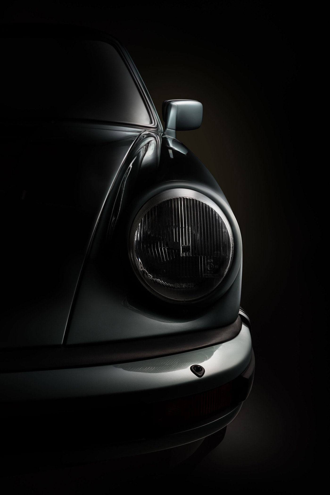

<div
  *ngIf="visible"
  class="fixed h-screen w-screen bg-black flex items-center justify-center overflow-hidden"
>
  <!-- Imagen de fondo -->
  

  <!-- Faro circular que se "enciende" -->
  <div class="absolute inset-0 z-50 pointer-events-none">
    <div class="faro mx-auto my-auto"></div>
  </div>
</div>

<style>
  .faro {
    width: 400px;
    height: 400px;
    border-radius: 50%;
    background: radial-gradient(
      circle,
      rgb(255, 255, 200) 0%,
      rgba(255, 255, 200, 0.7) 40%,
      rgb(255, 255, 200) 70%,
      transparent 90%
    );
    animation: faroOn 4s ease-out forwards;
    opacity: 1;
    position: absolute;
    top: 50%;
    left: 50%;
    transform: translate(-50%, -50%);
    filter: blur(20px);
  }

  @keyframes faroOn {
    0% {
      opacity: 0;
      transform: translate(-50%, -50%) scale(0.5);
    }
    90% {
      opacity: 1;
      transform: translate(-50%, -50%) scale(10);
    }
    100% {
      opacity: 1;
      transform: translate(-50%, -50%) scale(10);
    }
  }
</style>
